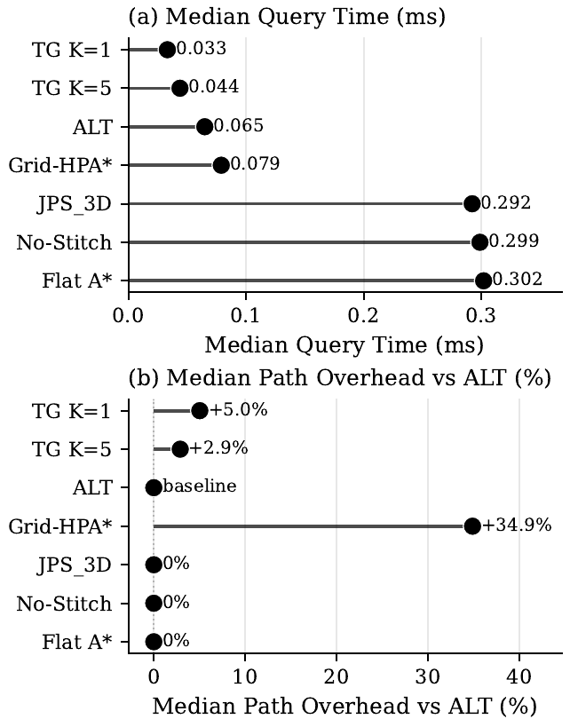
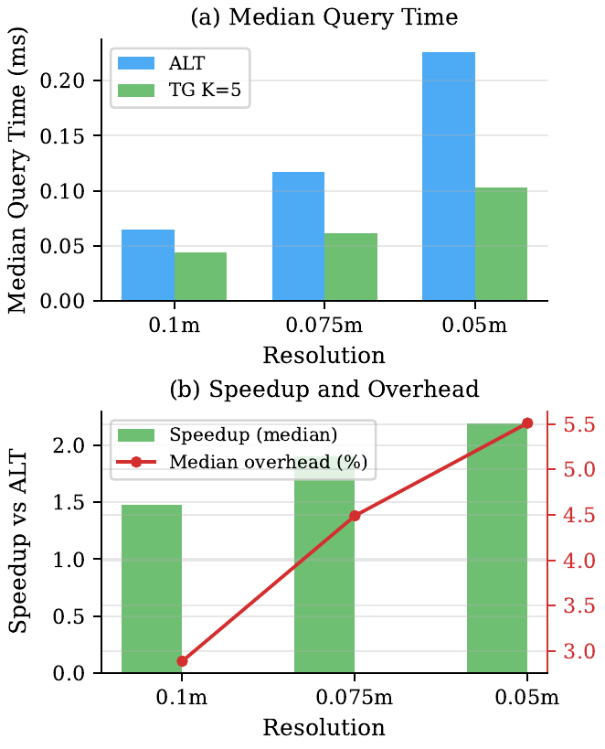
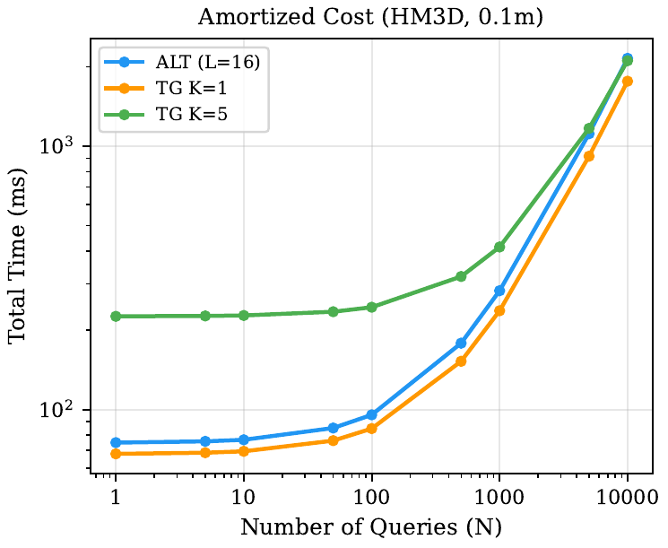

Persistent room segmentation
Clearance-field persistence identifies stable room-like regions and avoids brittle hand-tuned slicing.
Beyond Geometry
PH-ALT-TG turns dense walkable-surface voxel maps into compact room-and-portal transition graphs, enabling sub-millisecond planning on complex multi-room scenes.

Full-graph 3D planners remain expensive because every query searches over dense surface voxels. Simple abstraction can be fast, but often loses path quality in rooms, corridors, stairs, and multi-floor spaces.
Use topology to compress the map, then recover exact surface paths only where needed.
Clearance-field persistence identifies stable room-like regions and avoids brittle hand-tuned slicing.
Room boundaries become compact portal nodes, with intra-room geodesic costs cached by Dijkstra fields.
Landmark lower bounds guide A* on the transition graph instead of searching the entire surface map.
Parent-chain reconstruction stitches room segments into executable voxel paths with low overhead.
HM3D-only benchmark summary at 0.1 m resolution. PH-ALT-TG keeps the path overhead small while sharply reducing median query latency.
| Dataset | Method | Success | Valid | Median query | P95 query | Median overhead | Precompute |
|---|---|---|---|---|---|---|---|
| HM3D | ALT L=16 | 89.6% | 100.0% | 0.065 ms | 0.858 ms | - | 74.7 ms |
| HM3D | TG K=1 | 87.8% | 100.0% | 0.033 ms | 0.899 ms | +5.0% | 67.7 ms |
| HM3D | TG K=5 | 86.6% | 100.0% | 0.044 ms | 0.937 ms | +2.9% | 225.7 ms |
Representative plots generated from the benchmark pipeline.

The CDF shows median path overheads around +5.0% for K=1 and +2.9% for K=5 on HM3D.

Median query latency and median overhead remain controlled from 0.1 m to 0.05 m.

The transition graph is built once per map, then reused for fast multi-query planning.
The implementation includes ROS 2 navigation components, benchmark tooling, result aggregation, and figure generation scripts.